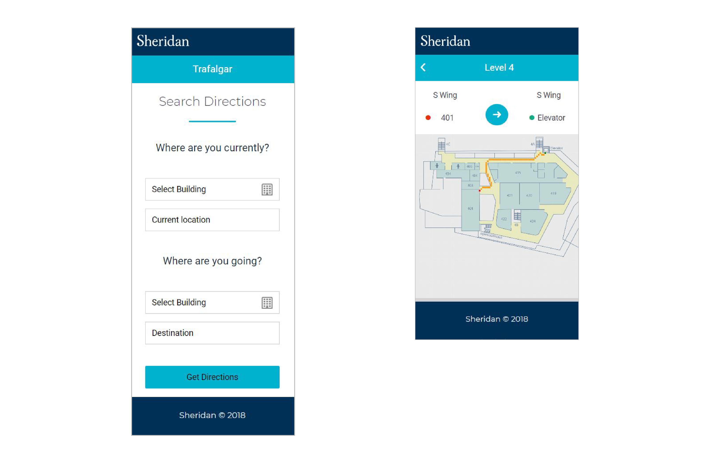

ZIMjs / PHP / MySQL / CSS
This mobile application is created for Sheridan students or visitors who are not familiar with the college directory.
Lee algorithm is applied for solving the issues using Breadth-first search.
The location information is stored on the database and the information about the place
where users are usually lost their ways can be analyzed.
*Note: My role is a Frontend Developer in this group project.
PROJECT TEAM MEMBERS
PAIN POINTS
New students and visitors in Sheridan College are often struggling to find their destination.
This is the one of big issues not being solved for a long time.
Our group members focus on this problem and find a solution with the algorithm.
SOLUTION
Zimjs(JavaScript Framework) is used with the algorithm and
it can find the location from start point to end point.
UI design is created simply so user can use this app easily.
[ Basic Algorithm ]
[ Idea Sketch ]
COLOR SYSTEM
Created style guide with using Sheridan College Brand Color for consistency.
[ Primary ]
[ Secondary ]
[ Basic ]
WIREFRAME
